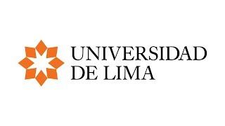

Curriculum
RUNET BRUNO CHAVEZ VILA

Perfil Personal
Estudiante del sexto ciclo de la carrera de ingeniería de Sistemas de
la Universidad de Lima. Tengo un conocimiento intermedio de programación
en C++ y Java. Dirigido a el aprendizaje de seguridad informática y al desarrollo
de software. Además de poseer un conocimiento básico - intermedio del inglés.
Datos Personales
Teléfono
(51) 955 404 395
Idiomas
Español
Ingles nivel básico-intermedio
Formación Académica
Nivel Secundaria, Colegio Trilce Salamanca, Lima
Marzo 2014 – Diciembre 2018
Nivel Superior, Ingeniería de Sistemas, Universidad de Lima, Lima
Abril 2019 - Presente
Cursando el séptimo ciclo de la carrera. Perteneciendo al tercio superior.
Educación Profesional
Personal de Servicio en realización de Catering, eventos y buffets
Enero 2017 – Presente
Encargado de brindar apoyo en la administración eventos ceremoniales
y uso de la maquinaria. Además, atiendo a las distintas personas en dichos
eventos en el servicio de alimentos.
Informática
Excel nivel Intermedio, Visio, Adobe Premiere nivel intermedio
Hobbies
Novelas ligeras, Natación, videojuegos, edición de videos